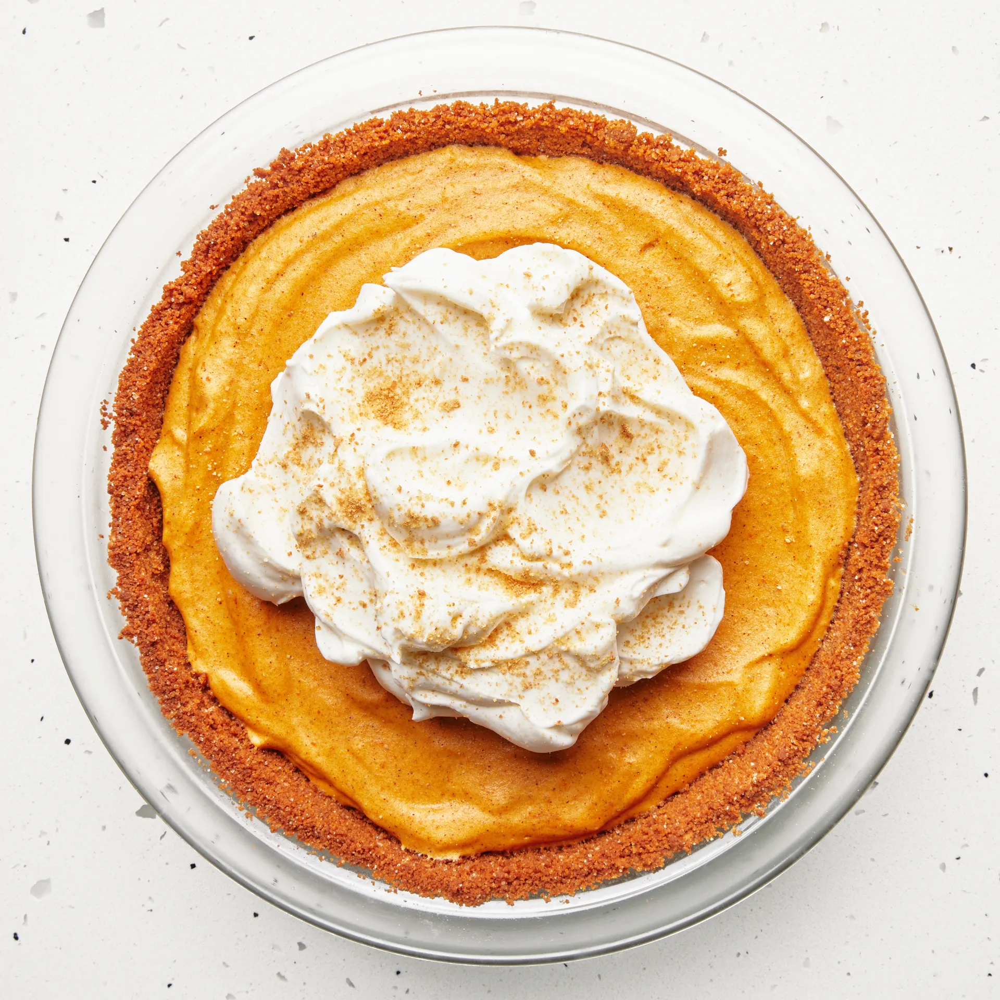

Pumpkin Chiffon Pie

Description
For those of us who don't like how dense traditional pumpkin pie can be, this chiffon pie is light and airy. Perfect for dessert after a large holiday meal.
Ingredients
Crust
- 12 graham crackers
- 2 tablespoons of granulated sugar
- 1/4 teaspoon of kosher salt
- 6 tablespoons of unsalted butter, melted and slightly cooled
Filling and Assembly
- 1 envelope of unflavored gelatin (2 1/2 teaspoons)
- 1 teaspoon ground cinnamon
- 1/4 teaspoon of all-spice
- 3/4 cup plus 2 tablespoons sugar, divided
- 3 large egg yolks
- 3/4 cup whole milk
- 1 1/4 cup pumpkin puree
- 3 large egg whites
- 1 cup heavy cream
Steps
- Preheat oven to 325 degrees F.
- Pulse graham crackers in a food processor until broken down into fine crumbs (you should have about 2 cups). Set aside 2 Tbsp. graham cracker crumbs for serving. Add sugar and salt and pulse just to combine. Add butter and pulse until mixture is the consistency of wet sand.